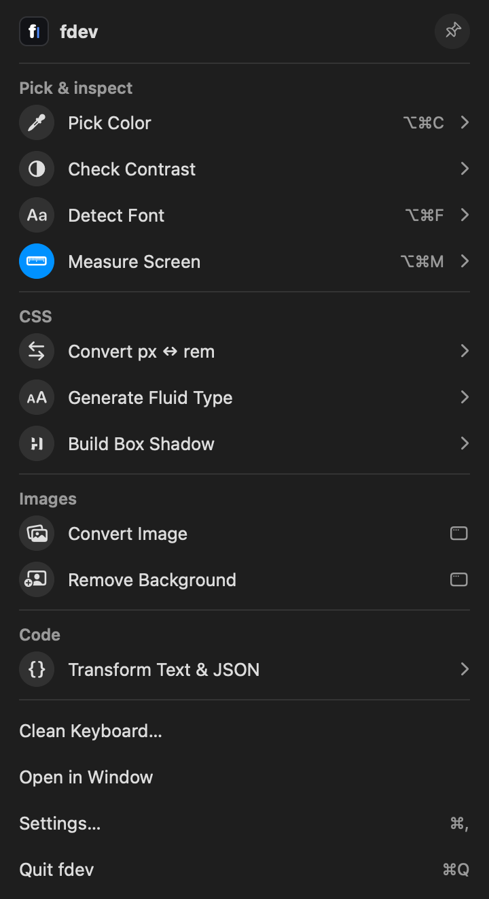

Pick Color
⌥⌘CThe system loupe samples any pixel on any display. Copy as HEX, RGB, HSL, Display P3, a SwiftUI Color or a CSS variable, with a history of recent picks.
Pick a color from any window, name the font under your cursor, measure the screen, check contrast, write CSS and clean up images. Native macOS, one click or one shortcut away, and everything runs on your Mac.
Free · Requires macOS 26 · Apple Silicon Mac · Signed with Developer ID and notarized by Apple

Ten tools
Each tool opens from the menu bar, its own shortcut, or the action wheel. Results are copied for you, with a small pop-up to confirm.
The system loupe samples any pixel on any display. Copy as HEX, RGB, HSL, Display P3, a SwiftUI Color or a CSS variable, with a history of recent picks.
WCAG 2.2 contrast ratio for any text and background pair, with AA and AAA results for normal and large text.
Hover text in Safari, Chrome or any native app to get its family, weight and size. fdev also tells you if it's on Google Fonts and writes the font-family stack.
Drag a ruler across anything on screen to read its width and height in points. Press Return or ⌘C to copy the size, Esc to cancel.
Type in either field with your own root size. Commas and dots both work as decimals.
Set min and max sizes and viewport widths to get a ready-to-paste clamp() value.
Layer shadows with a live preview and presets from sm to 2xl. Export as CSS, a Tailwind class or SwiftUI.
Resize and compress to AVIF, JPEG, PNG or HEIC, or copy as a data URI.
Apple Vision lifts the subject from photos. For logos and icons on a flat color, fdev removes that color, even inside letters and rings, with clean edges. Fill with any color, crop to the subject, or drop many files at once.
Format, minify or sort JSON. Base64 and URL encode and decode. Switch between camelCase, PascalCase, kebab-case, snake_case and CONST_CASE.
Action wheel
Hold ⌥Space and a Liquid Glass wheel opens around your cursor, like a weapon wheel in a game. Point toward a tool and let go.
The wheel appears where your cursor is, with nothing selected.
Its badge turns blue and its name shows in the middle.
The tool runs. Or tap the shortcut and click a slice, press 1–9, or Esc to close.
Choose which tools appear and in what order, and change the shortcut, in Settings → Wheel.
Small things that add up
fdev stays out of the way until you need it, then saves you a trip to a browser tab.
Start dragging an image toward the fdev icon and the menu opens with drop targets for Remove Background and Convert Image.
Your most recent ⇧⌘3/4/5 screenshot waits at the top of the menu. Copy it, drag it out, remove its background or convert it.
Pin the dropdown so it stays open while you click Finder or another app to drag files in.
Lock every key, including media keys, for 60 seconds so you can wipe the keyboard. Unlock any time with the mouse.
A short confirmation whenever something is copied. Choose how long it shows and where on screen, or turn it off.
Shortcuts, wheel layout, tool settings and color history follow you to every Mac.
Styled like the system's Wi-Fi menu, with light and dark mode. It shows in the Dock only while a window is open, and can launch at login.
Color picking, font detection and background removal all run on your Mac. Images are never uploaded. The only network request is the public Google Fonts list.
Keyboard
They work from any app. Change or turn off each one in Settings → Shortcuts, which also has a live test so you can see a combination arrive.
| Action | Shortcut | Notes |
|---|---|---|
| Action wheel | ⌥Space | Hold to aim, release to run. Presets: ⌥Tab, ⌃⌥Space, ⌥⌘W, F13. |
| Pick a color | ⌥⌘C | Copies in your chosen format. |
| Detect font | ⌥⌘F | Copies the font name under the cursor. |
| Measure screen | ⌥⌘M | Return or ⌘C copies, Esc cancels. |
| Settings | ⌘, | When fdev is in front. |
Get started
Get fdev.dmg from the latest release. It's signed and notarized, so macOS opens it without warnings.
Open the disk image, drag fdev into Applications, then launch it. The icon appears in your menu bar.
Detect Font and Clean Keyboard need it: System Settings → Privacy & Security → Accessibility → turn on fdev. Everything else works without it.
Building from source: ./build.sh in the repo, with Xcode 26 or later.